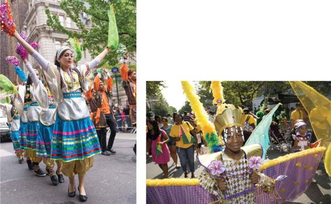

While the idea of race implies something fixed and biological, ethnicity is a source of identity based on society and culture. Ethnicity refers to a type of social identity related to ancestry (perceived or real) and cultural differences, which become effective or active in certain contexts. Members of ethnic groups see themselves as culturally distinct from other groups in a society, and are seen by those other groups to be so in return. Different characteristics may serve to distinguish ethnic groups from one another, but the most common are language, history or ancestry (real or imagined), religion, and styles of dress or adornment.
The United States is home to a multitude of different ethnic groups. In midtown Manhattan, members of the city’s Persian community participate in the annual Persian Parade. In Brooklyn, the West Indian Day Parade is a colorful celebration of Caribbean culture.
In the United States, some of the first sociological research took place on ethnic groups such as Italian Americans, Irish Americans, Polish Americans, and German Americans, though the Irish and the Italians were also sometimes thought of as a race as well. As the United States has become more diverse, many other races see themselves as composed of distinct ethnicities. East Asians encompass Chinese, Koreans, and Japanese, among many other ethnic groups, while Blacks include West Indians and West Africans, among many others.
Ethnic differences are wholly learned, a point that seems self-evident until we remember how often some groups have been regarded as “born to rule” or “shiftless,” “unintelligent,” and so forth. Indeed, when people use the term “ethnicity,” very often they do so (as with “race”) when referring to inherent characteristics such as skin color or blood ties. Yet there is nothing innate about ethnicity; it is a purely social phenomenon that is produced and reproduced over time.
For many people, ethnicity is central to their individual and group identity, but for others, it is irrelevant, and for still others, it seems significant only during times of conflict or social unrest. Ethnicity can provide an important thread of continuity with the past and is often kept alive through the practice of cultural traditions. For instance, third-generation Americans of Irish descent may proudly identify themselves as Irish American despite having lived their entire lives in the United States.
CONCEPT CHECKS
How do the changing racial categories used on the Census help demonstrate that race is socially constructed?
Explain the difference between ethnicity and race.
Why are Hispanics and African Americans considered to be minority groups in American society?